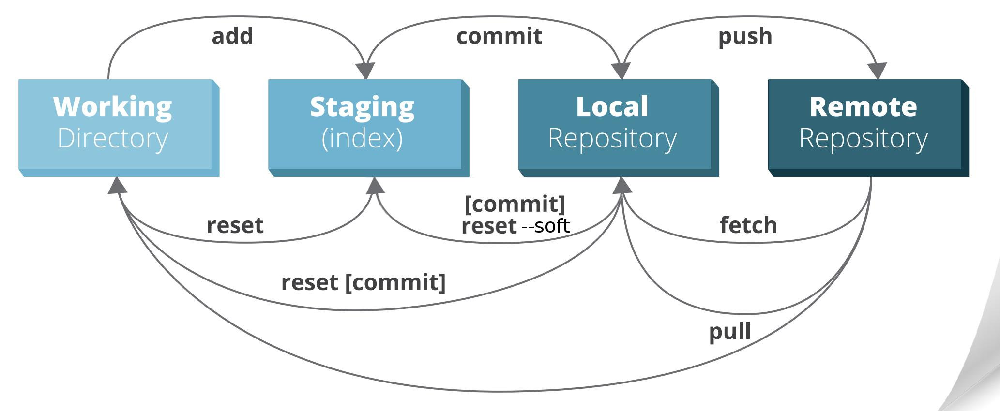
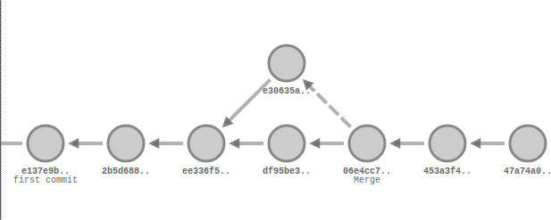
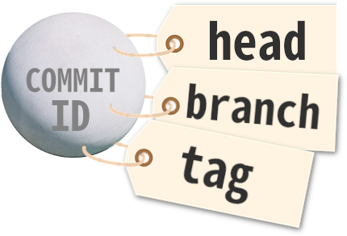
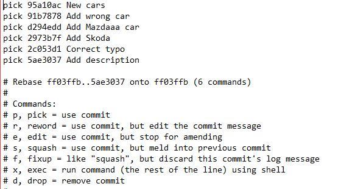
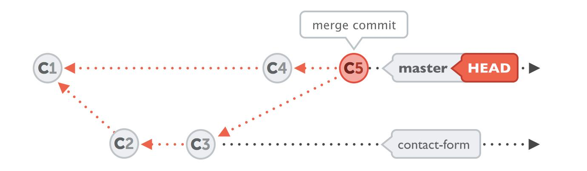
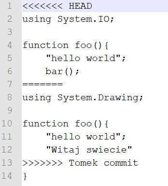
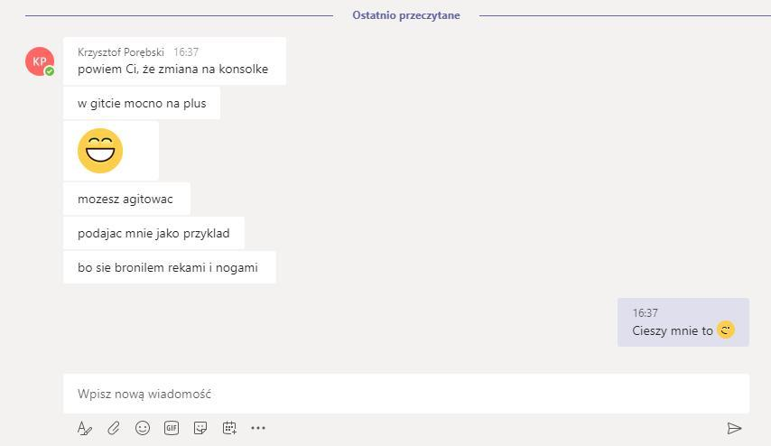
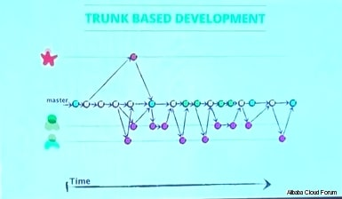
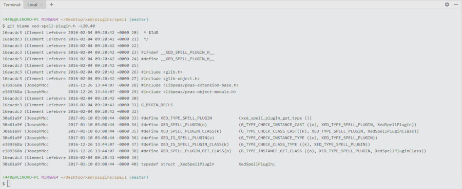
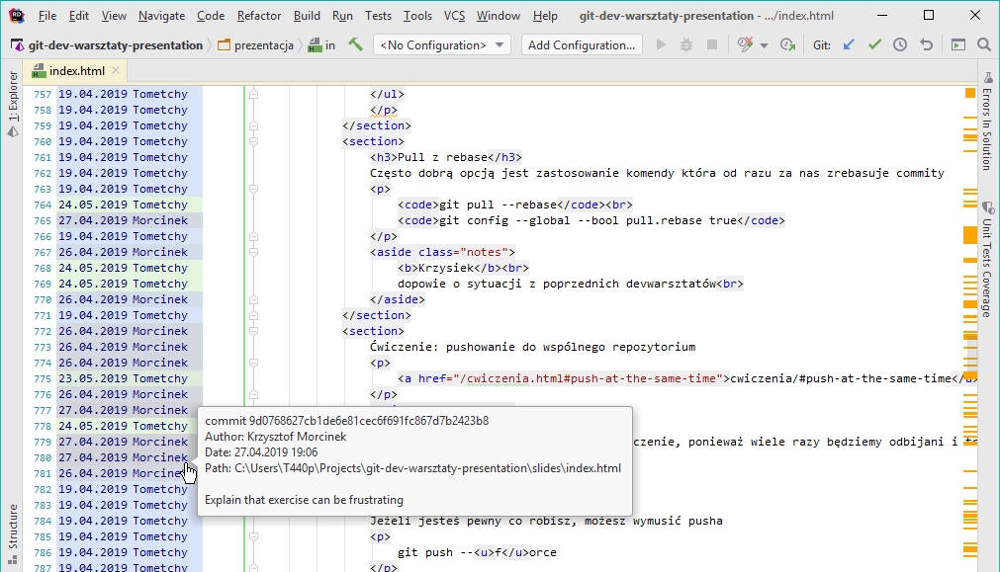

GitWarsztaty
Szlifowanie Gita

Tomasz Skraskowski

- Backend developer at Pirios S.A.
- Writes code since 12
- Currently .Net (Core), previously C++
- Interested in decentralized systems
- www.SoftwareDeveloper.Blog
Kwestie organizacyjne
- Prośba o zalogowanie się na kanał slackowy
- Po warsztatach prośba o uzupełnienie ankiety
- Pytania po czasie - Krzysztof Morcinek firmowy TechTalk
- Mówienie sobie po imieniu
Konsola & Gitk & Kdiff3

Pytania?
Konsola Gita
- Najefektywniejsza
- Najbardziej rozbudowana
- Uniwersalna (toole UI na niej bazują), wieloplatformowa
- Szybko działa
Kdiff3
- Efektywny
- Uniwersalny (pasuje do każdego kontekstu), wieloplatformowy
- Szybko działa
Gitk
- Efektywny
- Uniwersalny (pasuje do każdego kontekstu), wieloplatformowy
- Szybko działa
Dwa słowa o konfiguracji

Trzy poziomy konfiguracji
-
--global(brany pod uwagę w drugiej kolejności)-
Linux:
~/.gitconfig -
Windows:
%USERPROFILE%\.gitconfig
-
Linux:
-
--local(brany pod uwagę w pierwszej kolejności)-
.git/config
-
-
--system(brany pod uwagę na końcu)-
Linux:
/etc/gitconfig -
Windows:
%ProgramFiles(x86)%\Git\etc\gitconfig -
Windows:
%ProgramFiles%\Git\mingw64\etc\gitconfig
-
Linux:
Polecenie do modyfikowania
-
git config --POZIOM SEKCJA.NAZWA "TREŚĆ"-
Np.
git config --global user.name "John Doe"
-
Np.
Domyślny poziom przy zapisywaniu to local
Polecenia do odczytywania
-
Konkretny wpis:
git config (--POZIOM) SEKCJA.NAZWA-
Np.
git config --get user.email
-
Np.
-
Listowanie wpisów:
git config (--POZIOM) --list-
Np.
git config --list
-
Np.
Bez podania poziomu, git przyjmuje obecnie brany pod uwagę poziom
Uniwersalne polecenie
-
git config --POZIOM --edit-
Np.
git config --global -e
-
Np.
W praktyce 99% przypadków to:
git config --global -e
Pytania?
Warm-up exercise
Ustaw globalnie alias git sts dla skróconego statusu
[alias]
sts = status -s
Użyj git config --global -e
git config --global -e- Można dla wybranego repo (--local) mieć inną konfigurację niż globalnie
Nie będziemy rozmawiać o flow
Używaj stage
Porządkuj zmiany przed commitem
Lepiej jest commitować z konsoli
(zwłaszcza w porównaniu do IntelliJ)
Sam zarządzaj Gitem
Nie pozwól IDE grzebać Ci w Gicie (stagować/unstagować)
Dla Jet Brains skrypt w materiałach.Git Side Effect

Pytania?
- Używaj stage
- Sam zarządzaj Gitem
- Zapisz się na warsztaty Git Side Effect 🙂
cherry-pick
Commity między branchami można kopiować

git cherry-pick COMMIT_ID
Pytania?
Ćwiczenie z cherry-pick będzie za chwilę.- Commity między branchami można kopiować
(
git cherry-pick COMMIT_ID)
Czym jest HEAD i po co nam to wiedzieć
How many branches are here?

- HEAD is alias for COMMIT ID
- BRANCH is alias for COMMIT ID
- TAG is alias for COMMIT ID
What is HEAD and how many branches are on the picture?
Live Visualisation
Ancestors
COMMIT ID followed by
^ OR ^1- first parent of the commit~ OR ~1- first parent of the commit^2- second parent of the commit (only merge commit)~2- the first parent of the first parent - the grandparent~2^2- second parent of the grandparent (only merge commit)
First parent of the merge commit is the
branch into which we merged.
Second parent of the merge commit is the
branch we merged.
Pytania?
Excercise
GitWarsztaty.pl/try-to/reference-commit
- HEAD, branch, tag to tylko wygodne nazwy na ID commita
~2^3- third parent of the grandparent (only merge commit)
Edytowanie wprowadzonych zmian
- Przed opublikowaniem innym
- Po opublikowaniu innym
Edycja 'ostatnich' commitów przed opublikowaniem
- git reset
- git reset --mixed
- git reset --soft
- git reset --hard
- commit --amend
- rebase
- rebase --interactive
Edycja 'ostatnich' commitów po opublikowaniu
git revert
np:
- git revert HEAD
- git revert HEAD~4
- git revert 6e5av3a
Modyfikacja working directory i staging area
- git checkout *PATH*
- git reset --hard
- git clean (-d -f -n)
Ćwiczenie wspólnie z demo reset, revert, commit ammend
cwiczenia/#reset-revert-commit-ammend
Pytania?
rebase --interactive
rebase --interactive
Przenosimy linie tekstu w edytorze
Zmieniamy komendy z początków linii w edytorze
Zawsze wnikliwie czytamy podpowiedzi gita, piszemy git status gdy znikną
Merge

Rebase

Merge vs rebase

Git Guitar Hero

Strategie mergowania
- resolve
- recursive
- ours
- theirs
- patience
- diff-algorithm=[patience|minimal|histogram|myers]
- ignore-space-change
- ignore-all-space
- ignore-space-at-eol
- ignore-cr-at-eol
- renormalize
- no-renormalize
- no-renames
- find-renames[=n]
- rename-threshold=n
- subtree[=path]
- octopus
- ours
- subtree
Pytania?
Konflikty
- Są czymś naturalny w środowisku gdzie niezależne osoby działają
-
Tak wygląda powstały konflikt w kodzie

Jak rebasować, żeby nie bolało
Rebase to świetne narzędzie, ale...
- zakłamauje historię
- może wywołać konflikty których by nie było przy mergu
- a w związku z tym, może wprowadzić błąd na produkcję
- pomijając, że to dokłada dodatkowej roboty
Demo
Excercise
GitWarsztaty.pl/try-to/rebase-without-painSquashowanie brancha
Alternatywnie, możesz po prostu zesquoshować feature brancha do mastera
git checkout master
git merge --squash feature_branch
Twój branch zostanie domergowany liniowo jako jeden commit, a konfikty rozwiążesz tylko raz
- Zawsze warto preferować
rebase - Można zastosować trick
- Można zesquoshować brancha (
git merge --squash)
Pushowanie
&
pullowanie zmian
Synchronizacja repozytoriów (np. lokalnego z wersją na GitHubie) odbywa się za pomocą 'wypychania' i 'ciągnięcia' commitów
- git push
-
git pull
- git fetch
- git merge
Pull z rebase
Często dobrą opcją jest zastosowanie komendy która od razu za nas zrebasuje commity
git pull --rebase
git config --global --bool pull.rebase true
Push --force
Jeżeli jesteś pewny co robisz, możesz wymusić pushagit push --force
Ale jak już wymuszasz, to zawsze z zabezpieczeniem
git push --force-with-lease
7 zasad dobrego commit message
- Oddziel tytuł od ciała pustą linią
- Ogranicz tytuł do 50 znaków
- Stosuj wielkie litery w tytule
- Nie kończ tytułu commita kropką
- Zapisuj tytuł w trybie rozkazującym
- Ogranicz 'szerokość' ciała do 72 znaków
- Opisz co i dlaczego, a nie jak
https://chris.beams.io/posts/git-commit/
Ostrzenie konsoli
Obawy przed konsolą
- Pewnie trzeba się strasznie opisać, a to będzie wolno szło
- Pewnie będzie problem spamiętać komendy
- To jest jakiś niewygodny przeżytek
Kiedy nie warto kurczowo trzymać się konsoli?
- Tool bywa lepszy do diffa
- Toole ładniej wizualizują historię branchów
- W dobrym IDE wygodniej się patrzy na Git Blame
- Nie warto rozwiązywać konfliktów bez toola
Myszka jest do eksplorowania

Są toole z dobrze ogarniętymi
skrótami klawiszowymi

Ale dobrze ogarnięta konsola wygrywa
- Z dobrze ogarniętą konsolą pracuje się wydajniej
- Konsola zawsze ma więcej możliwości - żaden tool nie pokryje wszystkich casów
- Konsola jest uniwersalna
- Nie ma toola działającego szybciej niż konsola
- Konsola zachęca do lepszego zrozumienia Gita
- Toole często zachęcają do złych praktyk i budują złe nawyki
- Toole często zachęcają do klikania zamiast używania skrótów klawiszowych
- Wiele (popularnych) tooli działa wolno i odrywa od flow
Co to znaczy dobrze ogarnięta konsola?
- Konsola zawsze pod ręką
- Zdecydowanie najlepiej gdy jest zintegrowana w IDE
- Opcjonalnie wyskakująca od skrótu klawiszowego
(choć to mało przy otwartych na raz dwóch lub więcej projektach)
- Konsola z wydajnym autouzupełnianiem
- Zdecydowanie dobrze, gdy konsola ma wydajny
reverse search - Ustawione Git aliasy i aliasy na poziomie shella
- Edytor konsolowy lub przynajmniej szybko otwierający się
Jak w kilka minut przygotować konsolę na start?
- Aby spełnić wszystkie prerekwizyty
- IDE z wbudowanym terminalem
(np. Jet Brains Rider, działa reverse search) - Bash ustawiony jako terminal w IDE
(na Windowsie GitBash) - Aliasy (Gitowe i Bashowe) na start wzięte z internetu
(np. z tej prezentacji, później dostosowywanie pod siebie)
- IDE z wbudowanym terminalem
- Opcjonalnie
- Dla IDE bez terminala
- (Git)Bash przypięty do taskbarda pod stałą pozycją wywoływany Win+pozycja
- Lub nakładka na (Git)Bash umożliwiająca wywołanie skrótem klawiszowym np. Conemu
- W terminalu ustawiony katalog z projektami jako katalog startowy
- Text expandery na poziomie OS np. AutoHotKey
- Odradzam poleganie na Alt+Tab
- Dla IDE bez terminala
Don't get fooled by simple interface
- Visual Studio Extension: Switch Startup Project
- Azure DevOps build definition
Przekonałem już niejedenego
zatwardziałego Windowsiarza :)

Ignorowanie plików
Ścieżki do plików/katalogów które chcemy ignorować dla repozytorium, trzymamy w pliku .gitignore
Plik ten wersjonujemy w repozytorium
Przykładowe reguły ignorowania
*.orig**/[Pp]ackages/*bin/!src/Todo.csproj.user- wykluczenie od reguły (zaczyna się od wykrzyknika)
Dodaję regułę do .gitignore, a "git status" dalej pokazuje zmiany
Jest to scenariusz na który każdy prędzej czy później się natknie
Powód jest prosty - plik już jest w repozytorium,
.gitignore ignoruje tylko
nie śledzone pliki
Wystarczy plik... usunąć z repozytorium
Usuwanie pliku z repozytorium, żeby "posłuchał" reguł .gitignore
-
Tradycyjnie:
usunięcie pliku -> git add -> git commit -
Za pmocą komendy:
git rm file1.txt
git commit -m "remove file1.txt" -
Zostawiając plik na dysku:
git rm --cached file1.txt
git commit -m "remove file1.txt"
Gotowe reguły .gitignore
- www.gitignore.io
- checkbox przy tworzeniu nowego projektu
- Krzyśka Morcinka ;) .gitignore
Atrybuty plików
Atrybuty plików trzymamy w pliku .gitattributes
Plik ten wersjonujemy w repozytorium
Przykładowe atrybuty plików
*.java text diff=java*.css text diff=css*.xml text*.dll binary
Gotowe reguły .gitattributes
git reflog

Example
- git show HEAD@{5}
More examples
- git show master@{yesterday}
- git show HEAD@{2.months.ago}
- git log -g
schowek
git stashgit stash --include-untrackedgit stash listgit stash apply (optional: name)git stash pop (optional: name)git stash drop (optional: name)- Różne wariacje, zachowywanie indexu, nadawanie wiadomości itd.
Uwaga
Łatwo zapomnieć o nieśledzonych plikach
Jak działa git
Git w podstawowym scenariuszu jedynie dodaje kolejne snapshoty plików


gitk pokazujący cały stan projektu

git ls-tree -r 0e020 --name-only
W przeciwieństwie do kryptowalut...
możesz zmieniać istniejące snapshoty (commity)
ALE!
wiedząc, że jakoś trzeba się z innymi zsynchronizować :)
Git nie śledzi plików
W przeciwieństwie do niektórych VCS,
git nie śledzi plików, wyłącznie ich zawartość

Przydatne narzędzia związane z gitem
- GitHub Pages / GitLab Pages / Netlify
- Np. prezentacja na którą właśnie patrzymy:
gitwarsztaty.pl/prezentacja
- Np. prezentacja na którą właśnie patrzymy:
- GitHub gist
Tagi
Lekkie(lightweight) - tylko wskaźnik z nazwą
git tag v1.4
Opisane(annotated) - posiadają opis, sumę kontrolną, autora, datę itd.
git tag -a v1.4 -m 'my version 1.4'
Pushowanie tagów
Fetch pobiera wszystkie tagi z serwera, ale domyślnie tagi się nie wypushowują
Dwa sposoby pushowania tagów
- Zalecany:
git push origin tag_name - Silnie odradzany:
git push --tags
Trunk Based Development

Git Flow

Git Guitar Hero
Git blame
Który to ?!
Git blame w dobrym IDE jest równie wygodne jak w konsoli

Aliasy
Modyfikacje aliasów można wykonywać w gitconfigu
[alias]st = statusci = commit -v
Albo za pomocą polecenia
git config --global alias.st statusgit config --global alias.ci 'commit -v'
Przykład użycia - skrócone wypisywanie statusu
git st
Wiele remotów
git remote add anotherOrigin https...git remote -vgit push anotherOrigingit fetch anotherOrigingit push -u anotherOrigin your_branch
Credentials helper
Każdy push, fetch (czyli również pull), wymaga autoryzacji...

Wbudowane credentials helpery
-
cache-
git config --global credential.helper 'cache --timeout=300'
Bezpieczny, ale tylko tymczasowy (in memory).
Opcjonalnie własny timeout w sekundach (domyślny 900 - 15minut).
-
-
store-
git config --global credential.helper store
Wygodny, ale niebezpieczny - credentiale zapisane w pliku tekstowym niezaszyfrowane.
-
libsecret - wygodny i bezpieczny credentials helper dla Linux
Przykładowa instalacja dla Linux Mint / Ubuntusudo apt-get install libsecret-1-0 libsecret-1-devcd /usr/share/doc/git/contrib/credential/libsecretsudo make
Konfiguracja (gdy już zainstalowany)
git config --global credential.helper /usr/share/doc/git/contrib/credential/libsecret/git-credential-libsecret
Wygodny i bezpieczny credentials helper dla Windows
Instalator: github.com/Microsoft/Git-Credential-Manager-for-Windows/releases
Lub checkbox w trakcie instalacji gita:

Powinno ustawić: git config --global credential.helper manager
albo ścieżkę do exe
Podpis kryptograficzny
Commity i tagi można podpisywać kryptograficznie, jednak wymaganie tego w workflow jest kłopotliwe
-
$ git log --show-signature
commit 5c3386cf54bba0a33a32da706aa52bc0155503c2
gpg: Signature made Wed Jun 4 19:49:17 2014 PDT using RSA key ID 0A46826A
gpg: Good signature from "Scott Chacon (Git signing key) <schacon@gmail.com>"
Author: Scott Chacon <schacon@gmail.com>
Date: Wed Jun 4 19:49:17 2014 -0700
Add new function
Git hooks

Git bisect
Automatyzacja szukania commita, który wprowadził błąd